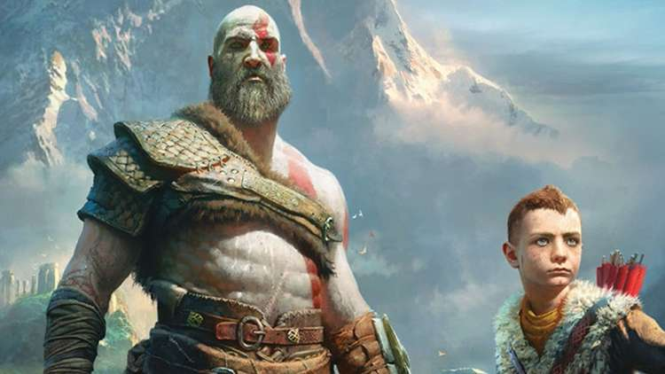

I
Video games have been a passion of mine ever since I was a kid. Growing up, it was an escape from reality, something I could spend countless hours on. It's really what initially sparked my interest / passion for technology.
As my spectrum of video games broadened; it brought me into the world of PC gaming, and from there led me to exploring computers as a hobby, and eventually a career.
Here are list of some of the most influential games for me, and ones that I'd recommend to everyone from beginner to the more seasoned gamer.
I recently got a PS5 and have been playing God of War. It's actually my first game in the series and I absolutely love it. I've been absent from console gaming for a few years as I was PC gaming. After playing this game, I remember the reason I fell in love with games. The story keeps you interested, the scenery is breath taking, and the action is so, so good.

Hands down one of my favorite games of all time goes to Kingdom Hearts. I've been in love with many of the Final Fantasy games, and frankly a vast majority of the works that came out from Square Enix (Formerly Square Soft). This game came out when I was in Elementary school, and I remember begging my mom to get it for me. It was a school night, and rather late at that so I wasn't allowed to play (we only had one TV, so there wasn't a way for me to sneak in some game time). So I instead spent my time reading the cover, front to back and reading the booklet (Something video games used to come with! Usually, had some game information and mainly instructions, controller settings etc.)
After playing the game for the first time, I was hooked until I completed the game. The story has a mixture of sadness and happiness, plenty of emotions packed into the game to send you on a roller coaster. Our main character Sora, has his world turned upside down from something called the Heartless, and much of the story is about finding his two best friends that he has been living on an island together with. SquareEnix has always been ahead of the curve when it comes to groundbreaking graphics, but one thing that really stands out to me has always been the music. The music really helps capture the mood of the scene, and imprints itself in your memories, such that hearing the song again can definitely lead to goosebumps as you recall some pretty epic moments!
The last entry on this list, is quite frankly where it all began. Being born in '91 I was able to begin my gaming journey at a really young age. My mom had an NES console, and she loved the mario game (A few others as well, such as Galactica and Space Invaders), so I would spend a lot of time playing Mario, starting aroung the age of 3 or 4. I eventually surpassed my mom's score.
I wouldn't say Mario is even on my top 10 list, certainly not the original version of it. But it is what got me into gaming all those years ago. So it still holds a special place in my heart.